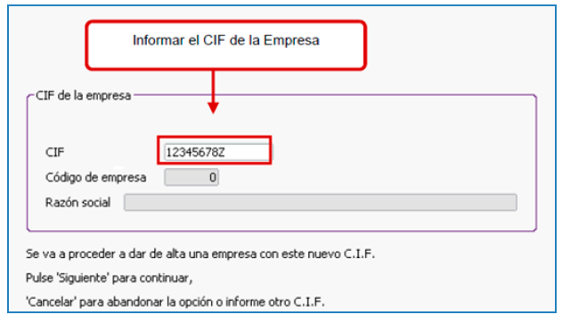
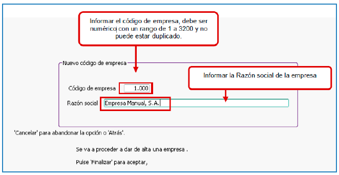

Para dar de alta una empresa se acedera al Menu General : Gestion_Diaria / Empresas / ALTAS
Una vez introducido el CIF, si no se actualizan los campos Empresa y Razon social,
significa que la empresa no figura en la BD,
en caso contrario colocara en los campos correspondientes los datos.
Para dar de alta la empresa con el CIF nuevo debe agragar un codigo.
El codigo debe ser numerico y estar comprendido entre 1000 y 3200.
El codigo no puede estar duplicado.
Debe cumplimentar la razon social de la empresa